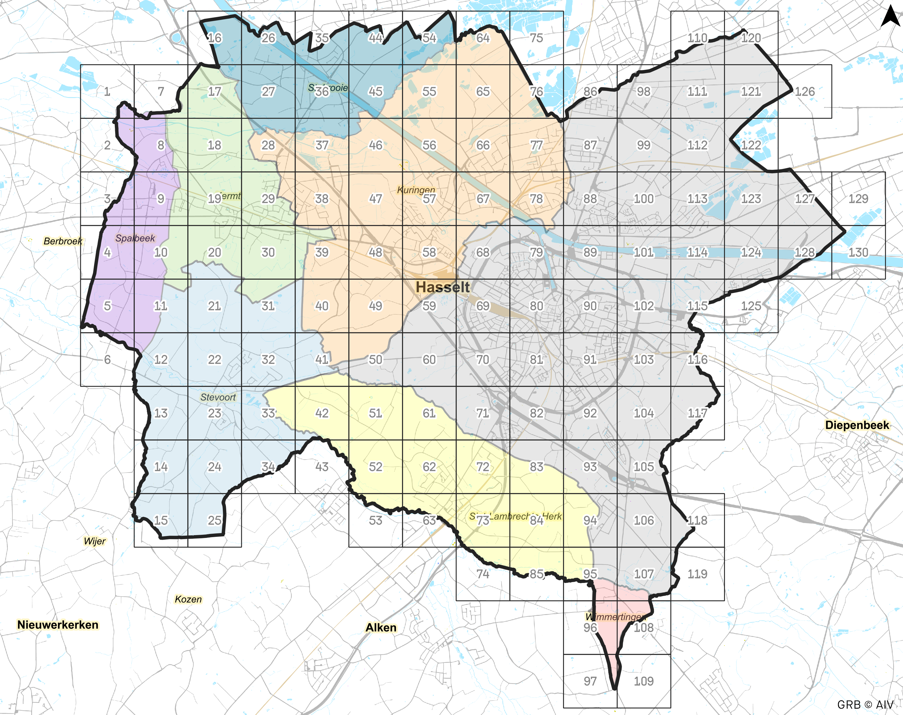

INVENTARIS
Na een grondige kaartanalyse o.b.v. heel wat beschikbare digitale bronnen en dankzij de hulp van vele inventariseerders is wijk per wijk de toestand van de trage wegen op het grondgebied van Hasselt ondertussen in kaart gebracht. Een indrukwekkend huzarenstukje en al even impressionante cijfers!
VISIEVORMING
Dankzij de hulp van vele inventariseerders is wijk per wijk de toestand van de trage wegen op het grondgebied van Hasselt ondertussen in kaart gebracht. De inventaris vormt in een volgende fase de basis voor een proces van visievorming waarbij we onderzoeken op welke manier het netwerk naar de toekomst toe verder uitgebouwd en versterkt kan worden. Zo wordt o.a. duidelijk welke verbindingen belangrijk zijn, welke wegen toe zijn aan een herwaardering of herinrichting en welke de ontbrekende schakels zijn.

Zowie Vangeel
hasselt@tragewegen.be
tel: 0471 95 21 11
www.tragewegen.be